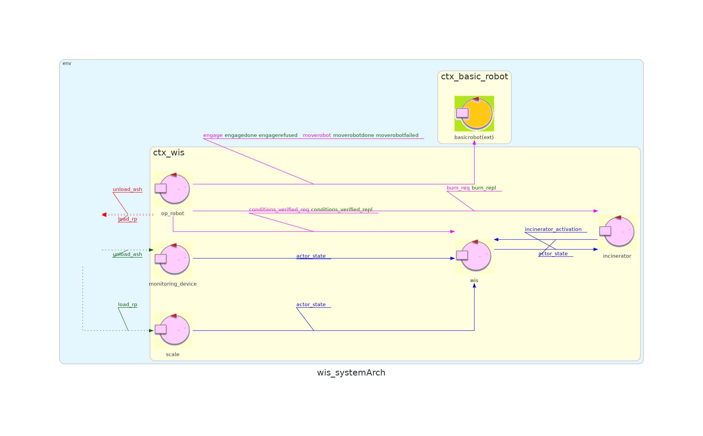

| Sprint name | Sprint 2 |
|---|---|
| Previous sprint | Sprint 1 |
| Next sprint | |
| QAK model | sprint2.qak |
| Developed by | Alessio Benenati Giulia Fattori |
| Repo Site | WasteIncineratorService |
In the previous sprint, we focused on studying the requirements related to the application logic of OpRobot and WIS.In this sprint, the focus is on the MonitoringDevice, specifically aiming to connect the virtual system produced in sprint 1 to a real MonitoringDevice deployed on a physical Raspberry Pi.
In the previous sprints, we hid the complexity of the monitoring device in a single mock actor without worrying about its subcomponents (LED and Sonar).
A more in-depth study of the component's application logic reveals two possible approaches:
The second solution allows for greater decoupling between the two components, especially considering their different nature (the Sonar is a "producer" of information while the LED acts as a "consumer").
For this reason, it is recommended to decompose the MonitoringDevice into its two subcomponents (LED and Sonar) and implement them as two independent actors in the same context.
Below, we present a comparison between the system architecture derived from the problem analysis in sprint 1 and the one resulting from sprint 2.
Sprint 1 Architecture 
Sprint 2 Architecture
Based on the Problem Analysis carried out previously, we implemented an executable version of the system covering the discussed features; we attach here a visual representation of the system architecture:

During the implementation, we encountered the high sensitivity of the Sonar, which often produces "noisy" data. For this reason, it became necessary to introduce a "Filtering Pipeline" to eliminate spurious data.
Specifically, this pipeline is composed of three actors:
Test Class: WISTest
| Test Name | Initial Condition | Expected Behavior |
|---|---|---|
| testIncinineratorActivation | WasteStorage contains 4 RP, AshStorge is empty, nobody empties AshStorage, Incinerator is inactive | Once the system is initialized, Incinerator is active |
| testOk4Rp | WasteStorage contains 4 RP, AshStorge is empty and can contain the ashes of 3 RPs, nobody empties AshStorage | After some time WasteStorage contains 1 RP and AshStorage is full |
To test the system you will have to activate the Virtual Environment first.
To do so, open a terminal in the unibo.basicrobot24 folder and type
docker compose -f virtualRobot23.yaml up
N.B. If you have an older version of docker, you may have to type docker-compose instead of docker compose
After that, you will have to activate the BasicRobot, which will act as a mediator between the VirtualRobot and the WasteIncineratorService application.
To do so open another terminal inside the unibo.basicrobot24 folder and type
gradlew run
Lastly, you have to activate the WIS system by opening a third terminal inside the WIS_Sprint1 folder and running
gradlew run
N.B. Type gradlew test if you want to launch JUnit tests instead of activating the system demo.
In the next sprint, we will focus on the MonitoringDevice's behavior.
Our goal is to connect the actual prototype of the system to a real monitoring device deployed on a real raspberry.